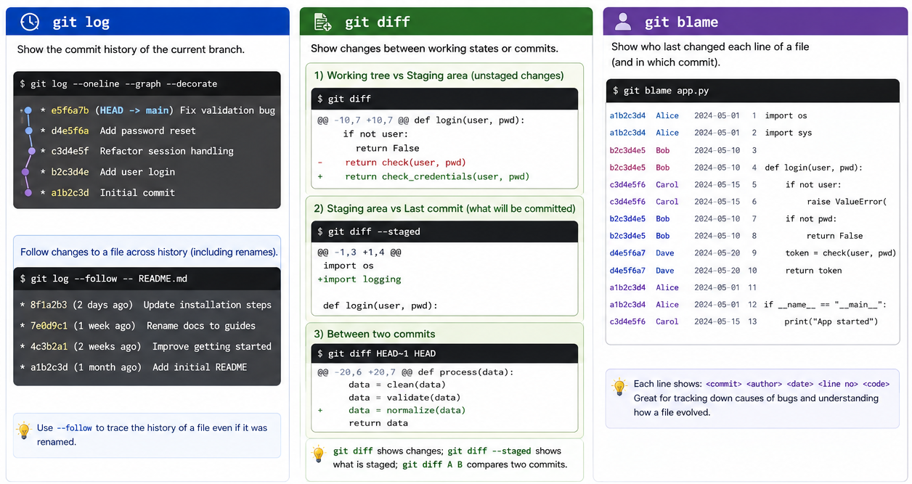

Git stores history so that you can question it later. In collaborative work the current state of the files rarely answers everything you need to know: when did this file last change, what exactly is different between two versions, and who last touched the line you are staring at? Three commands cover most of those questions — git log for which commits, git diff for what changed, and git blame for who changed it and when.

| Command | Answers |
|---|---|
git log | What commits are reachable from here, following parent links? |
git log A..B | Which commits are in B but not in A? |
git log --follow -- file | What is this file's history, even across renames? |
git diff | What have I changed but not staged yet? |
git diff --staged | What will go into the next commit if I commit now? |
git diff A B | How do two commits differ? |
git blame file | What commit last changed each line of this file? |
git show <commit> | What did this one commit change, and what was its message? |
git log is the starting point for most historical questions, and it is more than a chronological diary. Beyond listing the commits reachable from where you are, it can restrict that list to one side of a comparison — git log A..B shows the commits reachable from B but not from A, which you met in Week 4 and which turns out to be the single most useful form in collaborative work. It can also narrow to one file, and --follow keeps tracking that file's history back past any renames.
One piece of syntax appears in several of those commands and is worth naming: the bare --. It separates the things Git should treat as commits or branches from the things it should treat as file paths. Without it, a command like git log README.md is ambiguous if a branch happens to also be called README.md; writing git log -- README.md tells Git that what follows is definitely a path. You will see the same separator in git diff <commit> <commit> -- <file>.
git diff answers a different class of question: not which commits, but what is textually different between two states. Which two states depends entirely on what you give it, and three forms are worth knowing by heart — the same three set out in the figure above. With no arguments, it compares your working tree against the staging area: what you have changed but not staged. With --staged, it compares the staging area against the last commit: what committing right now would record. Given two commits, it compares those. The first two you met in Week 4; what is new here is using the third to inspect work that is not yours.
git blame is often misunderstood because of its name. In practice, it is better treated as a line-level annotation tool than as a social blame mechanism — a way to see what commit last modified each line of a file, which is extremely useful "code archaeology" when you are trying to understand where suspicious code came from.
One more piece of notation is worth having before going further, because it recurs through the rest of this week. Wherever Git expects a commit, you can write HEAD~N to mean "N commits back from where you are now": HEAD~1 is the commit before the current one, HEAD~2 the one before that, and so on. It saves looking up a hash whenever you only need to point a short way back. So the quickest way to review what your own last commit actually did is:
$ git diff HEAD~1 HEAD # what changed in the most recent commit?
$ git log --follow -- README.md # and this file's history, past renamesThese commands are far more useful combined than listed. Below are the three questions that come up most often once you are sharing a repository, and the commands that answer each.
1. "What have my teammates done since I last looked?" This is where git fetch earns its place. Fetching updates origin/main but deliberately leaves your own main alone (Section 5.1) — which means the gap between the two is exactly the work you have not seen yet, and a range asks for precisely that gap:
$ git fetch origin
$ git log main..origin/main --oneline
9d4e7b0 Add unit tests for parser
5c1f6a8 Fix off-by-one error in tokenizerTwo commits arrived that you do not have. Read main..origin/main as "in origin/main, but not in main". You can now decide whether to pull them straight away, and you have read them before they touch your working tree — which is the whole reason to prefer fetching over pulling blind.
2. "What is on my branch that main does not have yet?" The same question with the two sides swapped. Run this before opening a pull request and you see exactly the set of commits the reviewer will see:
$ git log main..feature-parser --oneline
3f8a2c1 Add token scanner
c8d2e91 Add parser skeleton
a7b3f40 wipThat third commit is the reason to look. A message like wip tells a reviewer nothing, and this is the moment to notice it — before other people are reading your history rather than after.
3. "Where did this line come from, and why?" Blame tells you which commit last touched a line, but a hash on its own explains nothing. The useful move is to take that hash straight to git show, which prints the commit's message together with its diff:
$ git blame parser.py
...
5c1f6a8 (Bob 2024-05-10 42) if index <= len(tokens):
...
$ git show 5c1f6a8
commit 5c1f6a8...
Author: Bob <bob@example.com>
Fix off-by-one error in tokenizer
...The line now has a reason attached to it, not just an author. That two-step — blame to find the commit, show to understand it — is the everyday form of what people call code archaeology, and it is why Week 4 insisted on commit messages that explain why rather than what.
log for which commits, diff for what text changed, blame for who last touched this line, show for what one commit did. Almost every real investigation chains two or three of them together. The skill is not recalling flags — it is recognising which question you are actually asking.
A clean commit message helps git log make sense. Focused changes make git diff easier to read. Small, meaningful commits make git blame more informative, because each line then points back to a clearer historical decision. Good collaboration today creates better history analysis tomorrow.
FIT2109 · Week 5 · Monash University · by Dr. Zahra Mirzamomen